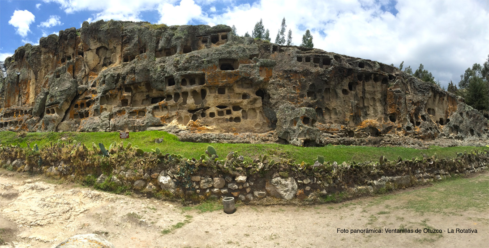

Lugares turistucos de CAJAMARCA que se encuentran dentro de la ciudad de cajamarca
LUGARES TURISTICOS
Mirador del cerro Santa Apolonia
Su nombre original fue rumitiana o rumipascana que en quechua significa “Asiento de Piedra”. Formación rocosa de origen volcánico. Ubicado en la parte alta a inmediaciones de la Plaza de Armas, constituye un elemento plenamente integrado
al espacio y paisaje urbano. Los colonos la llamaron en un inicio San Francisco de Monte Alberna. Después llevó el nombre con el que actualmente se le conoce como Santa Apolonia por haber sido sede de una capilla en honor a la
Santa del mismo nombre.
Baños del Inca
Los Baños del Inca poseen aguas termales de temperaturas superiores a 70ºC (158ºF). Los minerales que las componen poseen propiedades terapéuticas para el tratamiento de afecciones a los huesos, sistema nervioso, piel e incluso se
dice que cura la gastritis. Uno de los principales atractivos de este lugar es el Pozo del Inca, ubicado al interior del complejo de Baños.
LUGARES FUERA DE LA CIUDAD
Lugares turistucos de CAJAMARCA que se encuentran alrededor o fuera de la ciudad de cajamarca
LUGARES TURISTICOS
Santuario Virgen del Rosario
Ubicado en el centro poblado El Rosario de Polloc, el templo maravilla a sus visitantes con sus paredes, columnas, techos y piso decorados bajo la técnica de mosaico. El santuario de la Virgen del Rosario es el principal atractivo
del centro poblado “El Rosario de Polloc” y no podía ser de otra forma. Quién ingresa a este lugar queda maravillado por su belleza.
Ventanillas de Otuzco

Conocida arqueológicamente como necrópolis de Otuzco. Su denominación, “ventanillas”, proviene del aspecto que ofrecen como conjunto de cavidades dispuestas en hileras consecutivas horizontales. Las ventanillas son concavidades de
forma cuadrada y rectangular, talladas en bajo relieve en una superficie rocosa de origen volcánico. Algunas evidencias permiten s eñalar que corresponden a la cultura Cajamarca, que tuvo influencia entre los años 300 y 800 dc
Granja Porcón
El pueblo de Granja Porcón vive una vida aparte de la locura de la ciudad. Le gusta mostrar a sus visita ntes la paz y la tranquilidad que vienen de su vida simple, los cuales traen consigo el poder de sanar su alma.
Cumbe Mayo
Está ubicado a 20 Km. al oeste de la ciudad de Cajamarca. A una altura de 3 500 m.s.n.m. Su nombre deriva de Cumbe: Fino y Mayo: Río Lo que en quechua quiere decir “río fino”. Cumbe Mayo está rodeado por un fantástico bosque de piedras
que parece reproducir la silueta de piadosos frailes por lo que familiarmente se les denomina “frailones”..